1. Dự đoán CPA / GPA
Bước 1: Chọn định hướng sinh viên.
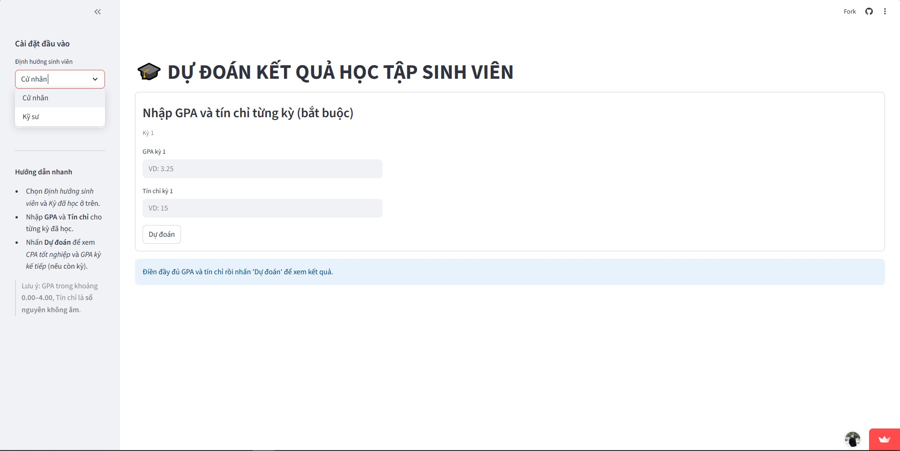Bước 2: Chọn kỳ đã học.
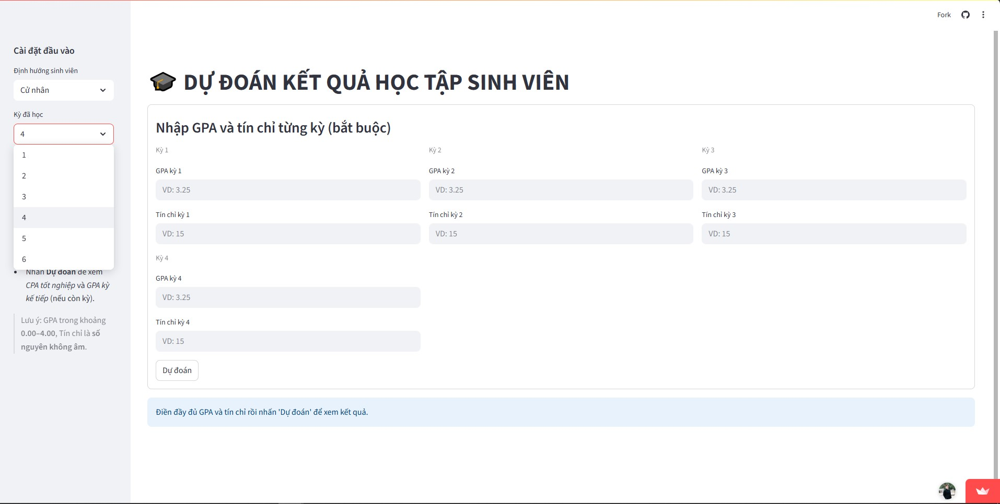Bước 3: Nhập GPA và số tín chỉ học từng kỳ.
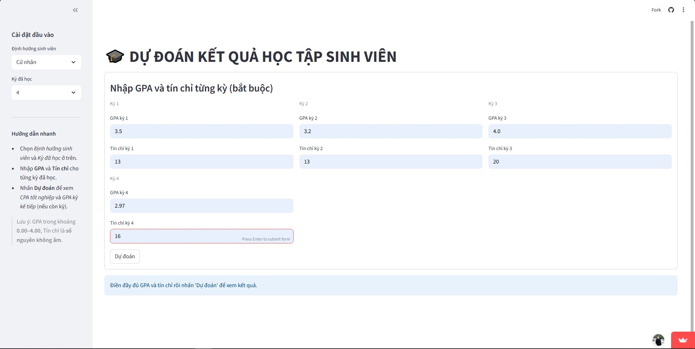Bước 4: Bấm Dự đoán để xem kết quả.

Trang này cung cấp hướng dẫn chi tiết cách sử dụng các chức năng dự đoán CPA/GPA và điểm từng môn học. Bạn hãy làm theo từng bước minh họa bên dưới.
Tác giả: Vũ Mạnh Hùng
Công nghệ: Python, Streamlit, Machine Learning
Mục đích: Hỗ trợ sinh viên dự đoán kết quả học tập nhanh chóng và trực quan
Liên hệ: manhhungcoder02@gmail.com
Bước 1: Chọn định hướng sinh viên.
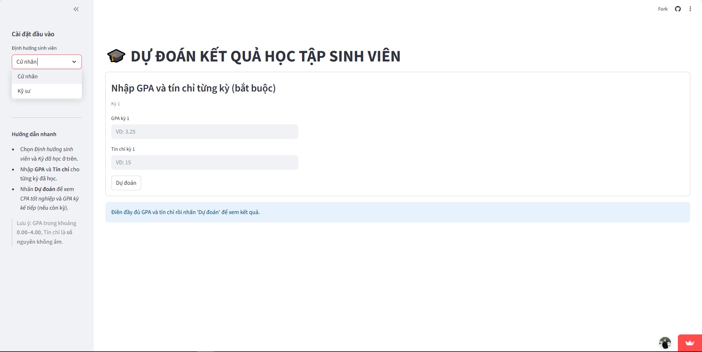Bước 2: Chọn kỳ đã học.
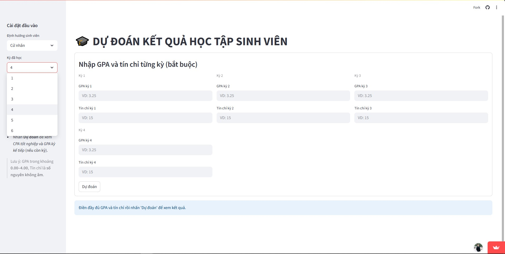Bước 3: Nhập GPA và số tín chỉ học từng kỳ.
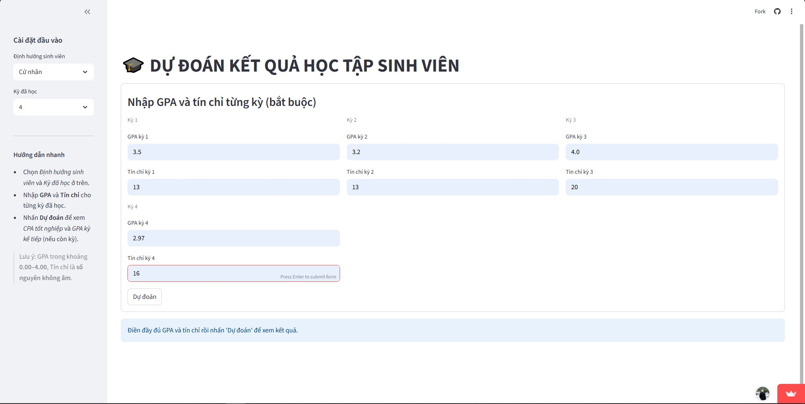Bước 4: Bấm Dự đoán để xem kết quả.
Bước 1: Download file excel input-score.xlsx bằng cách chọn nút "Tải xuống input-score.xlsx".
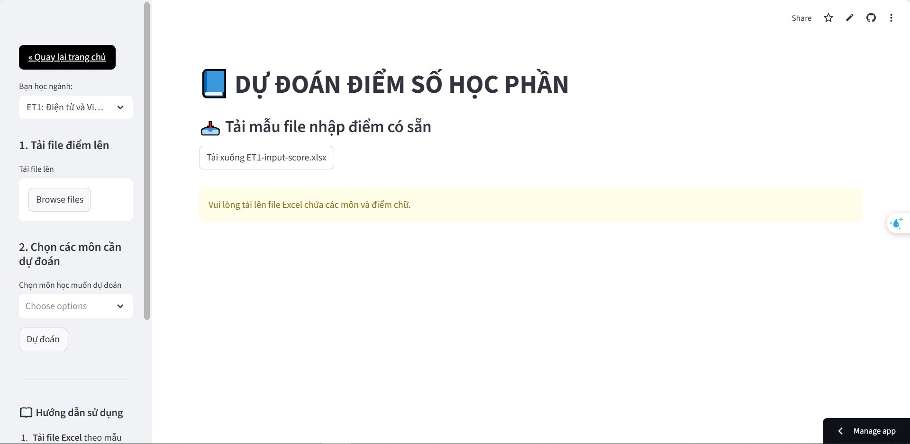Bước 2: Nhập điểm số các môn đã học.
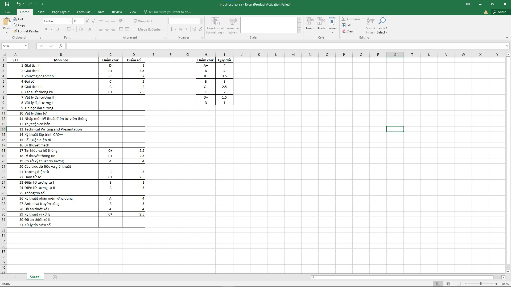Bước 3: Upload file bằng cách chọn Browse files.
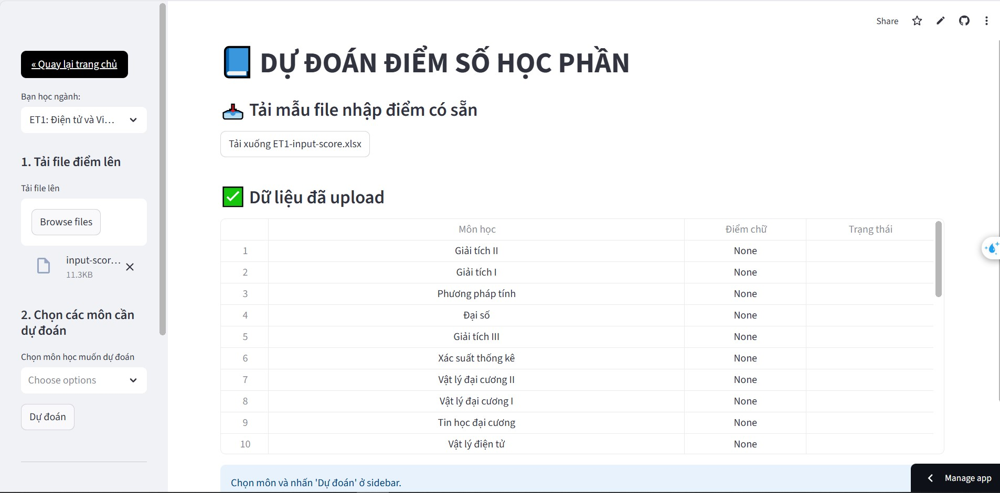Bước 4: Chọn môn học muốn dự đoán.
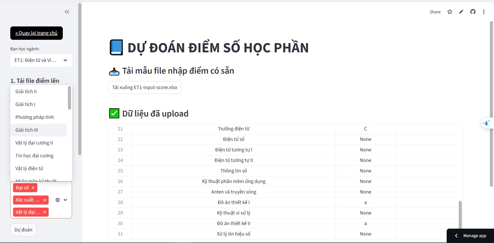Bước 5: Nhấn nút Dự đoán để xem kết quả.
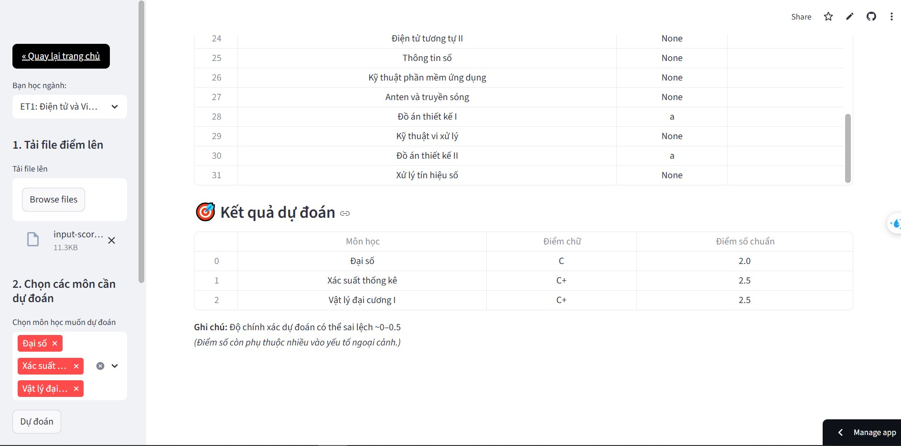Khảo sát góp ý
Donate dự án